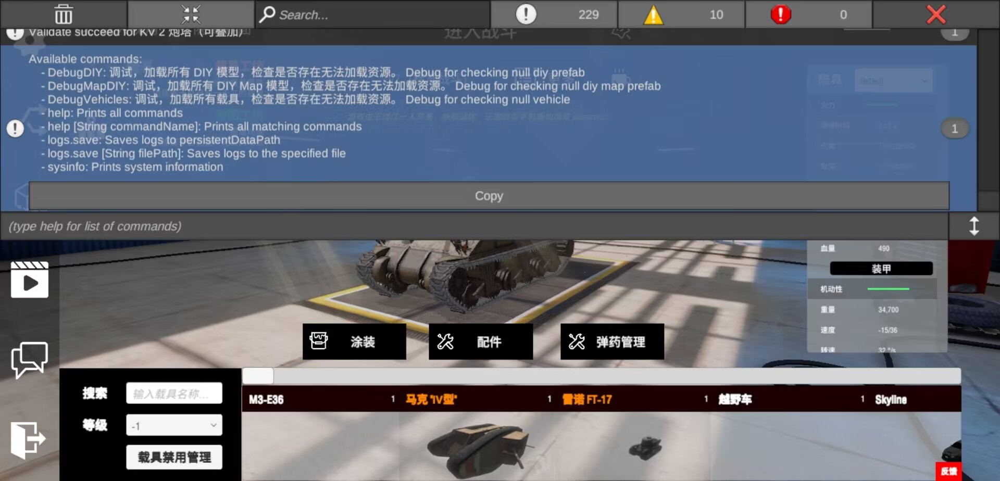
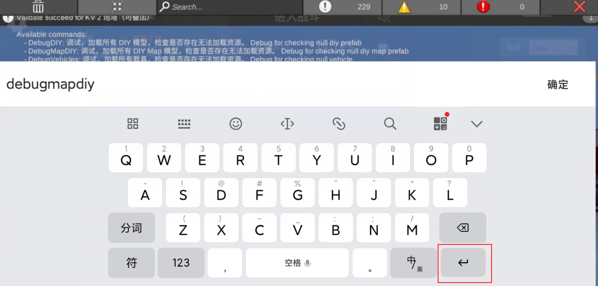

1. 游戏调试工具 Game Debugging Tools
热更下载渠道修改 Changing the Hot-Update Download Channel
默认情况下，游戏会下载生产环境的热更文件。通过修改一个文件，可使游戏改为从测试环境下载热更新。测试环境的热更新通常比生产环境的更新，但也意味着可能存在 Bug。如果在测试环境中遇到 Bug，请及时上报给开发者。
By default the game downloads hot-update files from the production environment. By editing one file, you can make the game download hot updates from the test environment instead. Hot updates on the test environment are usually newer than the ones on production, but that also means they may contain bugs. If you run into a bug on the test environment, please report it to the developers promptly.
切换方式： 需正常进入游戏车库一次，然后打开 /sdcard/Android/data/com.ShanghaiWindy.PanzerWarDEM/files/env.txt，将 prod 修改为 staging 并保存文件即可。
How to switch: launch the game and reach the garage once, then open /sdcard/Android/data/com.ShanghaiWindy.PanzerWarDEM/files/env.txt, change prod to staging, and save the file.
校验 DIY 资源是否完整 Verifying That DIY Resources Are Complete
调试窗口中增加了一些调试指令：
Several debug commands have been added to the debug window:
DebugDIY
DebugMapDIY
DebugVehicles
输入调试指令后，点击回车即可执行调试指令。输入 help 可查看所有调试指令。
Type a debug command and press Enter to run it. To list all of the debug commands, type help.
用于检查是否有部分资源在制作时或安装后损坏，从而导致游戏卡死。
They are used to check whether some resources were damaged while being made, or after they were installed, which can cause the game to freeze.
由于此检查会遍历所有已读取的资源，因此过程会比较漫长。
The check goes through every resource that has been loaded, so it takes quite a while.
如果要检查是否有 DIY 忘记生成预制体，请输入 DebugDIY。
If you want to check whether a DIY item is missing its generated prefab, type DebugDIY.

